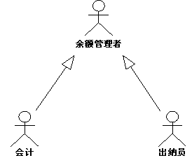

| 指南：参与者泛化关系 |
 |
|
关系
主要描述
说明几个参与者可以在特定用例中扮演相同角色。因此，执行检查的用例将检查帐户余额的出纳员和会计师看成相同的外部实体。共享的角色被建模为参与者“余额管理者”，两个原参与者继承它。 使用参与者泛化关系来显示此关系。  参与者“出纳员”和“会计师”继承“余额管理者”的所有属性。因此，这两个参与者都可以作为“余额管理者”。 使用在与系统的关系中，用户可以扮演几种角色，这表示事实上用户可以对应几个参与者。为使模型更清楚，可以使用继承几个参与者的一个参与者来表示该用户。每个被继承的参与者代表与系统有关的用户角色之一。 |
© Copyright IBM Corp. 1987, 2006. All Rights Reserved. |